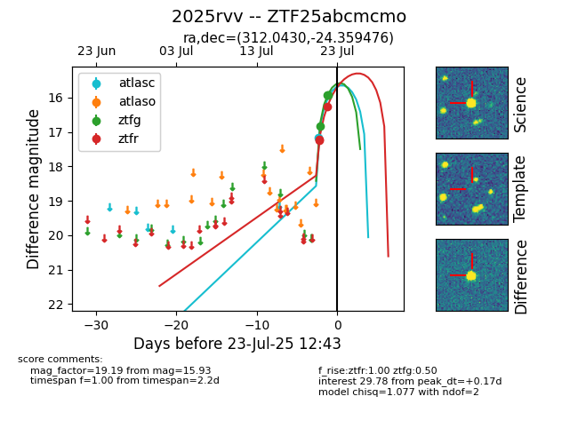

Target ZTF25abcmcmo at 2025-07-23 12:43, see:
FINK: fink-portal.org/ZTF25abcmcmo
Lasair: lasair-ztf.lsst.ac.uk/objects/ZTF25abcmcmo
ALeRCE: alerce.online/object/ZTF25abcmcmo
TNS: wis-tns.org/object/2025rvv
YSE: ziggy.ucolick.org/yse/transient_detail/2025rvv
alt names
ZTF25abcmcmo (ztf,fink)
2025rvv (tns,yse)
coordinates:
equatorial (ra, dec) = (312.0430,-24.35948)
galactic (l, b) = (21.2437,-35.69059)
photometry
last atlasc=17.17, ztfg=15.93, ztfr=16.27
1 atlasc, 3 ztfg, 3 ztfr detections
